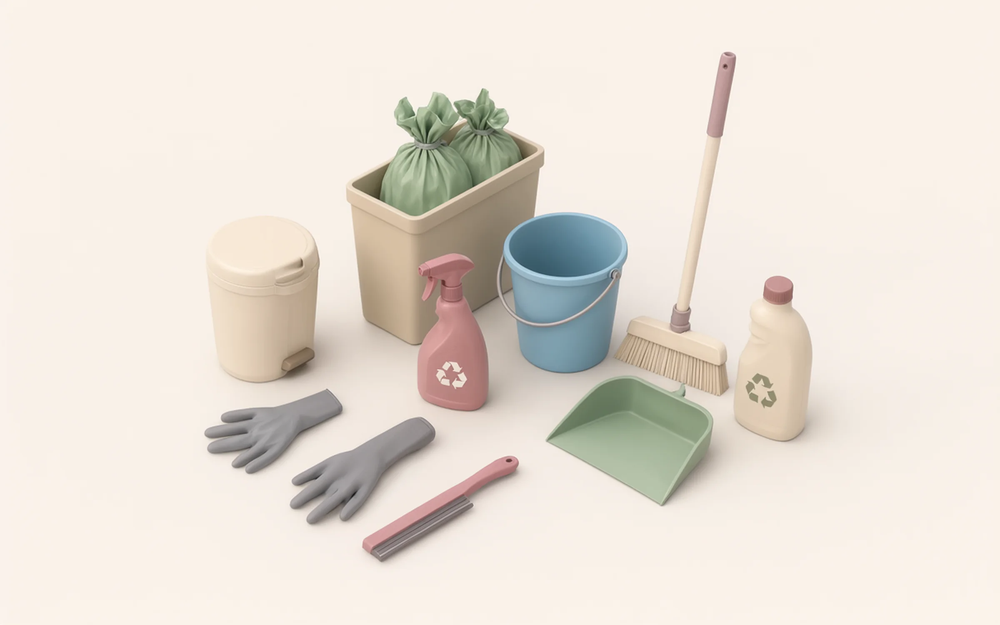
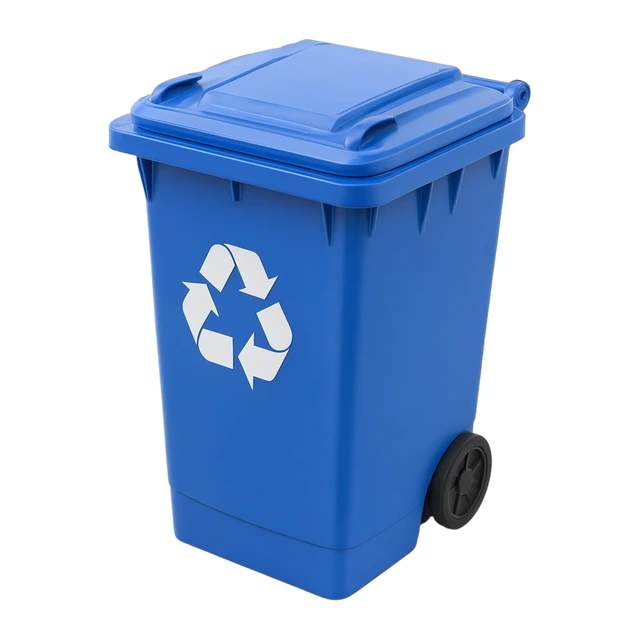
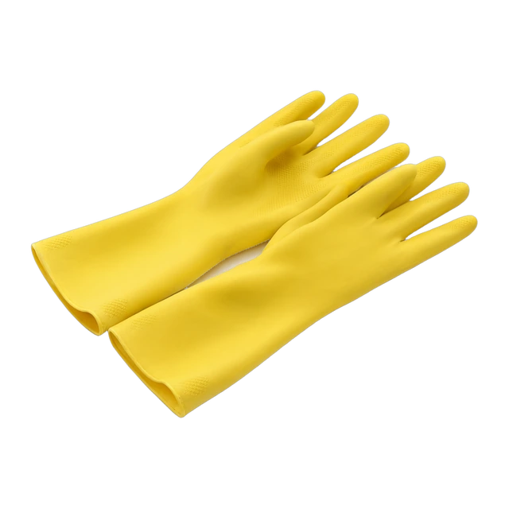
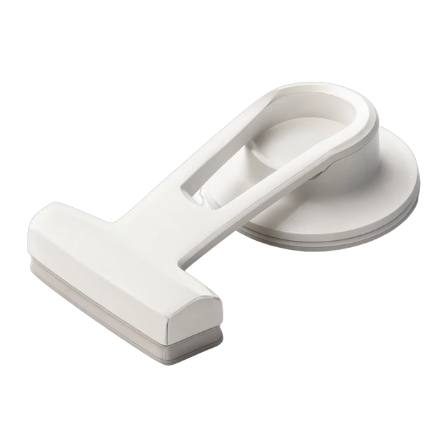

厨房
家居
服装
食物
身体部位
美妆与护肤
出行
Cleaning
清洁角
场景
卡片
女声
男声

指到或点一下物品
再听一次
trash can
trash bags
recycling bin
cleaning spray
bucket
rubber gloves
broom
dustpan
disinfectant
squeegee
trash can
垃圾桶
trash bags
垃圾袋

recycling bin
回收箱
cleaning spray
清洁喷雾
bucket
水桶

rubber gloves
橡胶手套
broom
扫把
dustpan
簸箕
disinfectant
消毒液

squeegee
刮水器
‹ Storage 储物
厨房
Cooking 烹饪动作 ›